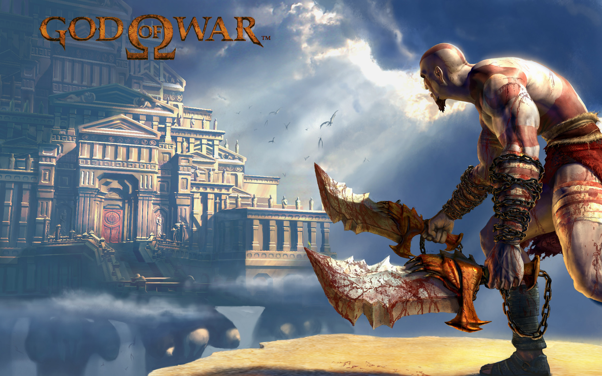
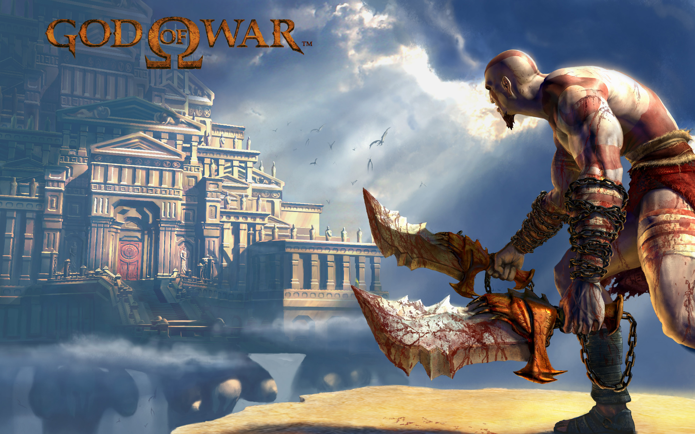

A God Of War Union é uma plataforma destinada a fâs da franquia God Of War para conversas, postagens, discussôes
e afins.
O que é feito dentro da plataforma?
Aqui os fãs se juntam para discutir sobre tópicos relacionados a franquia, fazer quizzes liberados semanalmente
pelos moderadores para descobrir quem tem mais conhecimento sobre, participar de desafios da comunidade e muito mais.
Qual o motivo da plataforma?
A plataforma foi criada da vontade de ter um espaço para juntar e unir pessoas que gostam da franquia e
buscam uma comunidade específica que elas possam participar assim como os fóruns faziam anos atrás.

 


O que é a God Of War Union?
A God Of War Union é uma plataforma destinada a fâs da franquia God Of War para conversas, postagens, discussôes e afins.
O que é feito dentro da plataforma?
Aqui os fãs se juntam para discutir sobre tópicos relacionados a franquia, fazer quizzes liberados semanalmente pelos moderadores para descobrir quem tem mais conhecimento sobre, participar de desafios da comunidade e muito mais.
Qual o motivo da plataforma?
A plataforma foi criada da vontade de ter um espaço para juntar e unir pessoas que gostam da franquia e buscam uma comunidade específica que elas possam participar assim como os fóruns faziam anos atrás.
Curtiu a nossa propósta? Junte-se a nós!
Feito com paixão por Enzo Jorge ♥ SPTech © 2024
v1.0.0